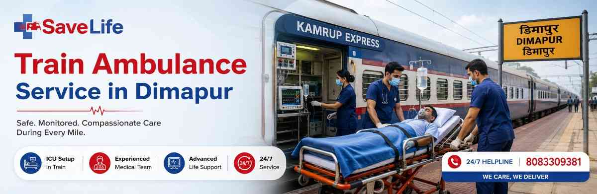

Dimapur is Nagaland's main railway gateway, but it isn't home to the super-specialty ICUs, cardiac cath labs, or transplant centres that many critical patients eventually need. When a family in Dimapur is told the next step is Guwahati, Kolkata, Vellore, Delhi, or Mumbai, the real question isn't where — it's how to get there without the patient's condition worsening on the way.
That's exactly what our Train Ambulance Service in Dimapur is built for. We move critically ill, post-surgical, bedridden, and ICU-dependent patients across long distances inside a fully monitored railway coupe, with a doctor or trained paramedic by their side from the first minute to the last. Think of it as an ICU bed that happens to be moving at 60 km/h instead of standing still in a hospital ward — same vitals tracking, same oxygen support, same emergency response, just en route to better care.
Families in Dimapur usually weigh three options when a long-distance transfer is needed, and each has a very different risk-and-cost profile:
For patients who are stable-but-fragile — post-cardiac-event, on ventilator support, recovering from major surgery, or requiring dialysis access at the destination — Best Train Ambulance Service in Dimapur providers exist precisely to fill this gap: clinical safety at a cost that doesn't drain a family's savings.
Every Dimapur Train Ambulance service we run is built around one principle: the patient's care shouldn't pause just because they're travelling. Our setup typically includes:
For neonatal, bariatric, or spinal-injury cases, we adapt the coupe layout and equipment list in advance based on the treating doctor's handover notes.
Our trained medical team is equipped to handle a wide range of conditions during transport. We regularly assist patients with:
Every step — permissions, coupe booking, staffing, and coordination at both ends — is handled by our team, so the family only has to focus on the patient.
Our Train Ambulance in Dimapur network regularly manages long-distance transfers to:
| From Dimapur To | Typical Use Case |
|---|---|
| Guwahati | Fastest, most common referral for specialist and emergency care |
| Kolkata | Cardiac, oncology, and multi-specialty tertiary care |
| Vellore (via Katpadi) | CMC Vellore referrals for complex or rare conditions |
| Delhi | Super-specialty hospitals, transplant and neuro care |
| Chennai / Bengaluru / Hyderabad | Advanced surgical and specialty treatment centres |
| Mumbai | Specialised oncology and cardiac institutes |
Routes and train availability are confirmed at the time of booking, since coupe reservation depends on real-time railway schedules.
Patients travelling out of Dimapur are most commonly headed toward:
We coordinate directly with the receiving hospital's admission desk so the patient is expected and the ICU/ward bed is ready on arrival.
Train ambulance pricing depends on a few factors, so we always give families a written estimate before booking rather than a vague range:
As a rule, train ambulance transfers cost a fraction of air ambulance charges for the same route, which is why it remains the preferred option for stable-but-critical patients on long-distance transfers from Nagaland. We share an itemised quote upfront — no hidden charges added after booking.
Families rarely book a medical transfer twice by choice — when it happens, it happens under pressure, and the provider they choose needs to get every detail right the first time. Here's what sets us apart:
Save Life Wellness is a medical transport service focused on safe, dignified, and clinically sound patient transfers across India. Our team of doctors, ICU-trained paramedics, and logistics coordinators works with families and referring hospitals to plan every transfer around the patient's actual medical needs — not a one-size-fits-all package. From the first phone call in Dimapur to the final handover at the destination hospital, our goal stays the same: get the patient there safely, comfortably, and without delay.
A train ambulance is a reserved railway coupe fitted with ICU equipment — ventilator, monitors, oxygen, and emergency drugs — where a doctor or paramedic accompanies the patient for the entire rail journey, unlike a road ambulance that only covers shorter distances.
Yes, provided the patient is assessed as fit for rail transfer beforehand. Our medical coordinator reviews the case and current vitals; if the patient needs faster or higher-acuity transfer, we recommend air ambulance instead.
Cost depends on the destination, coupe class, equipment needed, and medical staffing. We provide a written, itemised estimate before booking so there are no surprises later.
In genuine emergencies, we prioritise the next available train and coupe reservation, and typically confirm arrangements within a few hours, depending on railway seat/coupe availability.
Common destinations include Guwahati, Kolkata, Vellore, Delhi, Chennai, Bengaluru, Hyderabad, and Mumbai, depending on train routes and the patient's required specialty care.
Yes. We manage the full journey — road ambulance from home or hospital to Dimapur station, onboard medical care during transit, and a ground ambulance handover to the destination hospital's ICU or ward.
Yes, one attendant is generally accommodated in the coupe alongside the patient and medical team; let us know in advance so we can plan seating and space accordingly.
For emergency train ambulance booking in Dimapur, contact Save Life Wellness's 24/7 helpline for an immediate case assessment and cost estimate.